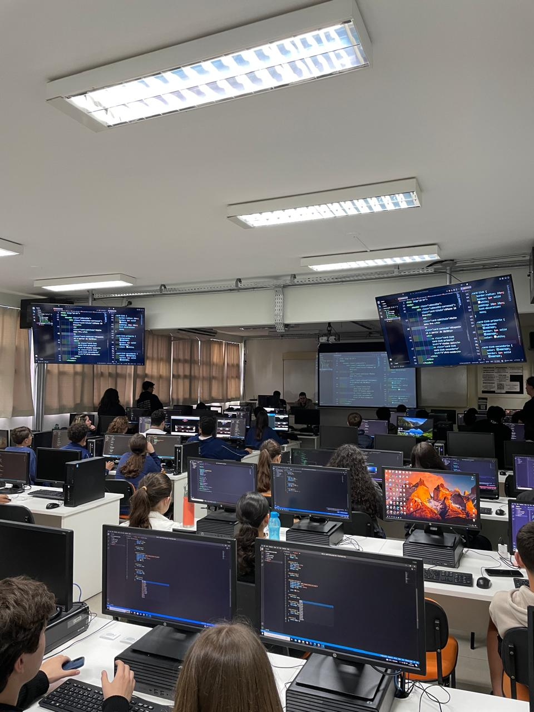

Relatório – 17ª Aula
Data: 15/09/2026
Turma: A
Instrutor: Victor
Landing Pages
Nesta aula de Pensamento Computacional, demos continuidade no projeto de copiar a landing page da Apple Brasil, utilizando HTML e CSS. O objetivo era reproduzir fielmente o layout, incluindo imagens, ícones, links e textos, aplicando conceitos de posicionamento e organização visual aprendidos anteriormente.
Durante o desenvolvimento, auxiliei alunos que ficaram com dificuldade no código, mas a maioria dos alunos que eu vi estava conseguindo acopanhar com tranquilidade por conta do evento da Apple da semana passada tivemos que mudar um pouco o layout da página e algumas imagens, mas no geral conseguimos avançar bem.
